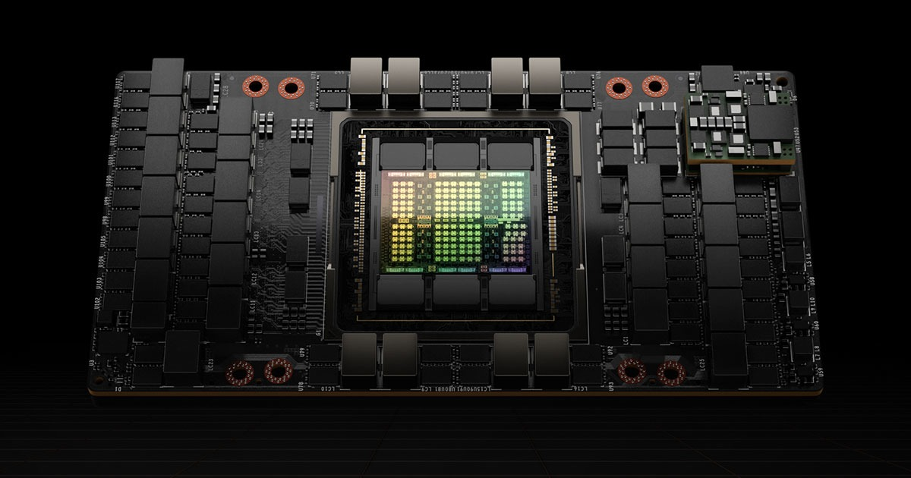
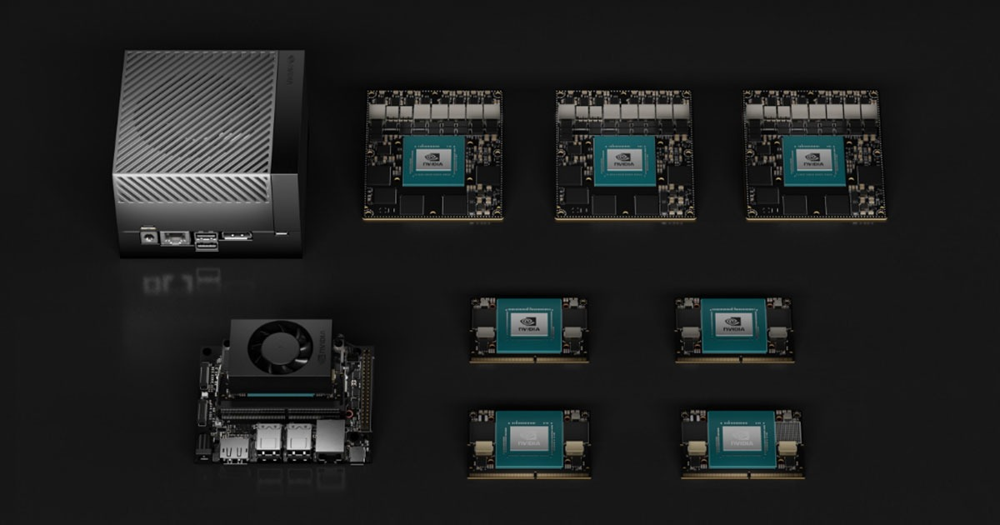
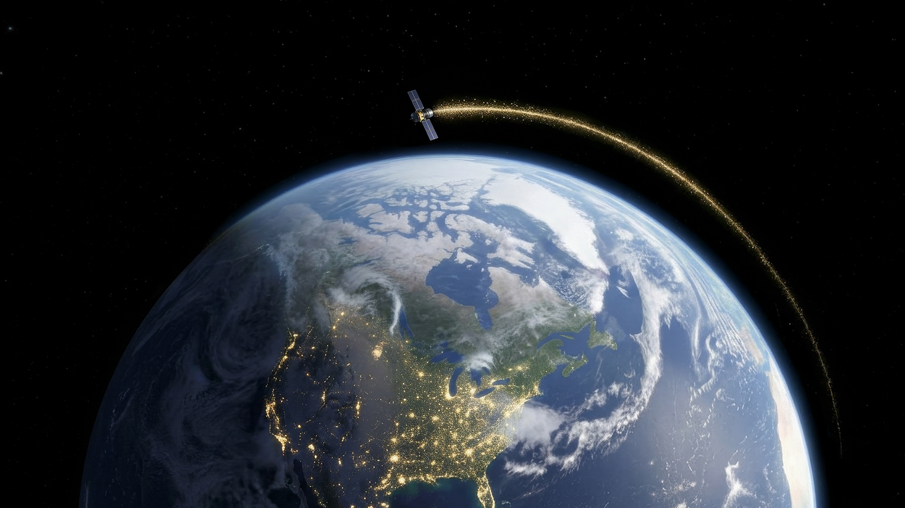

NVIDIA (NVDA)
W kontekscie: Promieniowanie i elektronika rad-hard vs COTS
NVIDIA nie produkuje ani jednego układu odpornego na promieniowanie. Spółka wprost nie oferuje procesorów rad-hard, odpornych na promieniowanie FPGA/MCU ani pamięci klasy space-grade, a jej udział w segmencie "rad-hard electronics" wynosi zero (NVIDIA Space Computing, 16.03.2026). Mimo to stała się de facto standardem ładunku obliczeniowego na orbicie - operatorzy konstelacji sięgają nie po dedykowaną elektronikę kosmiczną, lecz po komercyjne, dostępne z półki (COTS) akceleratory AI, te same które napędzają naziemne centra danych. Powód jest prozaiczny: rad-hardowy procesor jest o kilka rzędów wielkości słabszy wydajnościowo od współczesnego GPU, a integratorzy chcą przenieść na orbitę ten sam, dojrzały stack CUDA zamiast budować go od zera (NVIDIA Space Computing, 16.03.2026; Kepler Communications, 16.03.2026). To jest właśnie napięcie, które rozwija wątek COTS kontra rad-hard: koszty, opóźnienie generacyjne, wydajność.
Portfolio NVIDIA wykorzystywane on-orbit przez integratorów jest komercyjne, nie zakwalifikowane do kosmosu. Kompaktowy moduł Jetson Orin trafia do satelitów, payloadów i CubeSatów; platforma edge IGX Thor adresuje zastosowania krytyczne (secure boot, bezpieczeństwo funkcjonalne); do przetwarzania na orbicie i na ziemi dochodzą układy klasy data-center pokroju H100 i nowszych Blackwellów oraz zapowiedziany w marcu 2026 moduł Space-1 Vera Rubin do inferencji AI na orbicie - z deklaracją do 25x większej mocy obliczeniowej AI niż H100, ale z dostępnością określoną jedynie jako "później" (NVIDIA Space Computing, 16.03.2026). Pierwsze realne wdrożenie pokazuje skalę zjawiska: Kepler Communications umieścił 40 modułów Jetson Orin na 10 satelitach (Kepler Communications, 16.03.2026) - liczba wielkościowo pomijalna przy rocznych przychodach spółki.
Mechanizm ryzyka technicznego jest tu wprost finansowy. Skoro moduły są COTS, a nie rad-hard, w niskiej orbicie (LEO) narażone są na SEU (pojedyncze przerzuty bitów), TID (skumulowaną dawkę jonizującą) oraz latch-up, a próżnia odbiera konwekcję jako drogę odprowadzania ciepła. To wymusza ekranowanie, redundancję i kwalifikację misyjną, które podnoszą masę, koszt i czas wdrożenia (NVIDIA Space Computing, 16.03.2026; Kepler, 16.03.2026; AMD Space). Konsekwencje dla żywotności sprzętu w warunkach skumulowanej dawki rozwija Żywotność elektroniki vs dawka skumulowana i MTBF, a samo środowisko zagrożeń opisuje Środowisko radiacyjne: czym właściwie grozi orbita.
Dla inwestora: NVIDIA wchodzi na orbitę z elektroniką niezaprojektowaną do promieniowania - to nie jest linia rad-hard, lecz transfer komercyjnego stacku AI. Ekspozycja kosmiczna jest dziś marginalna i nie jest osobno raportowana.
Materiały spółki
Grafiki z materiałów spółki / IR (prawa właściciela, użycie redakcyjne). Pełny rejestr:
Spolki/assets/_licencje.json.

H100 Tensor Core GPU (produktowy og-image). Źródło: www.nvidia.com; licencja: materiały spółki / IR - prawa właściciela, użycie redakcyjne.

Jetson Orin (produktowy og-image). Źródło: www.nvidia.com; licencja: materiały spółki / IR - prawa właściciela, użycie redakcyjne.

NVIDIA Space Computing / orbital data centers (grafika z komunikatu). Źródło: iprsoftwaremedia.com; licencja: materiały spółki / IR - prawa właściciela, użycie redakcyjne.
W kontekscie: Gracze i projekty
W krajobrazie projektów orbitalnego computingu NVIDIA występuje nie jako operator konstelacji, lecz jako dostawca ładunku obliczeniowego, którego sprzęt pojawia się w cudzych projektach. Najwyraźniej widać to u demonstratora StarCloud (dawniej Lumen Orbit), który uruchomił działający na orbicie układ oparty o NVIDIA H100, a roadmapa NVIDIA prowadzi przez Blackwelle (B200) ku modułowi Space-1 Vera Rubin (NVIDIA Space Computing, 16.03.2026). To pozycjonuje NVIDIA po stronie COTS w sporze architektonicznym z podejściem własnego krzemu - kontekst gracza StarCloud rozwija StarCloud (dawniej Lumen Orbit) - działający demonstrator z NVIDIA H100.
Kontrapunktem jest Google z Project Suncatcher, który zamiast COTS GPU stawia na własne TPU na orbicie, z partnerstwem Planet Labs i demonstracją zapowiadaną około 2027 roku - to przykład gracza, który omija ekosystem NVIDIA, projektując akcelerator pod własne potrzeby; wątek prowadzi Google - Project Suncatcher (TPU na orbicie, partner Planet Labs, demo ~2027). Po stronie integratorów sprzętu NVIDIA pozostaje natomiast standardem przyjmowanym przez kolejnych operatorów, co widać szerzej w przeglądzie Mniejsi i sąsiedni gracze - cloud-OEM stack, GEO, Księżyc, Europa.
Dla inwestora: orbitalny computing jest dla NVIDIA opcją wzrostową, nie linią przychodów - spółka dostarcza komponenty do projektów innych podmiotów, a główny rywal architektoniczny (Google TPU) nie kupuje jej GPU.
Pozycja rynkowa
Skala biznesu NVIDIA pokazuje, jak marginalna jest dziś orbita. W roku obrotowym FY2026 (zakończonym 25.01.2026) spółka wykazała przychód 215,9 mld USD (+65% r/r), zysk netto GAAP 120,1 mld USD i marżę brutto GAAP 71,1% (NVIDIA Q4 & FY2026 earnings, 25.02.2026). Sam Q4 FY2026 (zakończony 25.01.2026) przyniósł 68,1 mld USD przychodu (+73% r/r) (NVIDIA, 25.02.2026). Rdzeniem jest platforma Data Center: 193,7 mld USD (+68% r/r), czyli około 90% przychodów (NVIDIA, 25.02.2026). Pozostałe platformy to Gaming & AI PC 16,0 mld USD, Professional Visualization 3,2 mld USD oraz Automotive & Robotics 2,3 mld USD (NVIDIA, 25.02.2026).
Na tym tle sprzedaż "do kosmosu" jest praktycznie nieobserwowalna. NVIDIA nie wydziela przychodów z segmentu orbitalnego - mieszczą się one w Data Center, a konkretne wdrożenia rzędu 40 modułów Jetson Orin u Keplera są wielkościowo pomijalne przy 215,9 mld USD rocznych przychodów (Kepler, 16.03.2026; NVIDIA, 25.02.2026). Udział orbity w sprzedaży należy więc traktować jako około 0% i NIE UJAWNIONE jako osobna pozycja. Przewaga NVIDIA jest natomiast jednoznaczna w warstwie wyżej: dominacja w akceleratorach AI i ekosystem CUDA czynią ją de facto standardem ładunku obliczeniowego, który operatorzy chcą przenieść na orbitę.
pie title Przychody NVIDIA wg platform - FY2026 (mld USD)
"Data Center" : 193.7
"Gaming & AI PC" : 16.0
"Professional Visualization" : 3.2
"Automotive & Robotics" : 2.3
Rys. - struktura przychodów NVIDIA wg platform rynkowych, FY2026. Orbita nie jest osobną pozycją (mieści się w Data Center). Dane: NVIDIA Q4 & FY2026 earnings, 25.02.2026.
Głównymi rywalami w niszy kosmicznego computingu są AMD/Xilinx z rad-tolerantnymi FPGA i SoC (np. Versal XQR, Kintex UltraScale+), tradycyjnie obecnymi w payloadach satelitarnych (AMD Space), oraz Hewlett Packard Enterprise z platformą Spaceborne Computer-2 na ISS (Emergen Research / HPE). Odrębną klasą konkurencji architektonicznej jest Google z własnym TPU (Project Suncatcher), który celuje w to samo zastosowanie z pominięciem GPU NVIDIA.
Ryzyka
Pierwsze ryzyko jest techniczne i wprost wynika z natury COTS. Moduły NVIDIA nie są rad-hard, więc na orbicie narażone są na SEU, TID i latch-up, a brak konwekcji w próżni utrudnia chłodzenie - co wymusza ekranowanie, redundancję i kwalifikację misyjną podnoszące masę, koszt oraz czas wdrożenia (NVIDIA Space Computing, 16.03.2026; AMD Space). Mechanizm finansowy: im więcej osłon i redundancji potrzeba, tym słabsza przewaga kosztowo-wydajnościowa COTS względem dedykowanej elektroniki, a żywotność sprzętu on-orbit pod skumulowaną dawką pozostaje otwartą zmienną.
Drugie ryzyko to regulacje eksportowe i koncentracja geopolityczna. Zaawansowane akceleratory AI są objęte amerykańskimi ograniczeniami eksportowymi - przypadek H20 do Chin kosztował 4,5 mld USD odpisu w Q1 FY2026 (NVIDIA Q1 FY2026). Rozszerzenie restrykcji na systemy kosmiczne lub utrata dostępu do zaawansowanych node'ów TSMC mogłyby zablokować dostawy dla konstelacji orbitalnych. Trzecim wymiarem jest konkurencja: AMD/Xilinx po stronie rad-tolerant FPGA oraz Google TPU jako alternatywna architektura akceleratora, która z definicji nie generuje przychodu dla NVIDIA.
Dla inwestora: ekspozycja orbitalna jest dziś nieistotna dla przychodów, więc materializacja tych ryzyk w niszy kosmicznej nie zmienia wyniku spółki - znaczenie ma jedynie jako wczesny sygnał o adopcji COTS na orbicie i o granicach ekosystemu CUDA wobec własnego krzemu hyperscalerów.
Powiązane spółki
Inne notowane spółki z raportu dzielące z tą firmą co najmniej jeden wątek tematyczny (wspólny rynek, technologia lub łańcuch wartości).
- Advanced Micro Devices, Inc. (AMD) - Rad-tolerant FPGA/SoC (Versal/Xilinx) + GPU
Wspólne wątki: Promieniowanie i elektronika. - Alphabet Inc. (GOOGL) - Project Suncatcher (TPU na orbicie)
Wspólne wątki: Gracze i projekty. - BAE Systems plc (BA) - Rad-hard procesory (RAD750/RAD5545); optyka (Ball)
Wspólne wątki: Promieniowanie i elektronika. - Microchip Technology Incorporated (MCHP) - Rad-hard/rad-tolerant FPGA (RTG4) i mikrokontrolery
Wspólne wątki: Promieniowanie i elektronika. - Planet Labs PBC (PL) - Partner Google Suncatcher (platformy/obrazowanie)
Wspólne wątki: Gracze i projekty. - Rocket Lab Corporation (RKLB) - Launch (Electron/Neutron) + Space Systems: bus, ogniwa SolAero, komponenty
Wspólne wątki: Gracze i projekty. - Voyager Technologies, Inc. (VOYG) - Stacje kosmiczne (Starlab), systemy kosmiczne i obronne
Wspólne wątki: Gracze i projekty.
Linkują tutaj
10 powiązanych notatek
- Mapa raportu Orbitalne / kosmiczne centra danych
- Sekcja Promieniowanie i elektronika rad-hard vs COTS
- Sekcja Gracze i projekty
- Spółka Alphabet (GOOGL)
- Spółka Advanced Micro Devices (AMD)
- Spółka BAE Systems (BA)
- Spółka Microchip Technology (MCHP)
- Spółka Planet Labs (PL)
- Spółka Rocket Lab (RKLB)
- Spółka Voyager Technologies (VOYG)